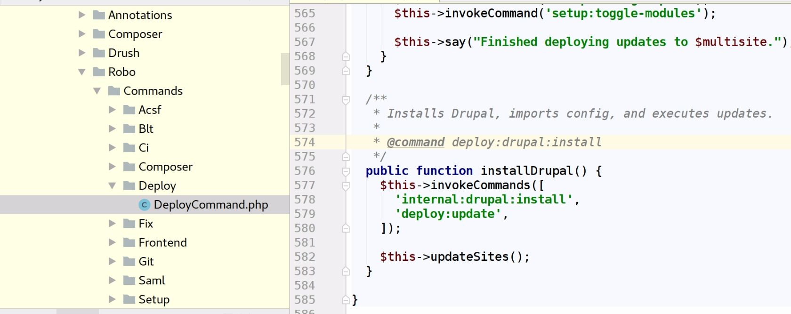

Acquia BLT
Extend and override defaults
bit.ly/ffw-blt
Slides are hosted on github, press 's' if you want to read speaker notes too.
About myself
Valery "valthebald" Lourie
Core mentoring coordinatorBulgaria DUG
 https://www.facebook.com/bulgaria.dug/
https://www.facebook.com/bulgaria.dug/
Agenda
- What
- Why
- Who
- How
- When
- Other questions
History
- 2015 - Drupal 7 and

- How do you reuse this???
- June 2016 - First public BLT release (8.0.0)
- Phing based XML templates
- Tasks are PHP classes
- Configuration with single YML file
- All-in-one package (DrupalVM + Drush + Behat + PhantomJS)
- Composer package since 8.3.0 (August 2016)
- 2017 - Switch to Robo

What is Acquia BLT
Build and Launch Tool
- Optimized for Acquia ecosystem
- Develop locally with DrupalVM
- Build artifacts with BLT
- Deploy to Acquia cloud
- Extensive documentation
- Best practices in repeating tasks
What is Acquia BLT
Build and Launch Tool
- Setup
- Build
- Sync
- Test
- Deploy
What is a command
Robo uses annotation discovery
Add your own!
I am happy with commands, where are the settings?

Configuration during setup
- Template (part of BLT source)
- => Overrides (part of the project code base)
- => Local defaults (not part of the code base)
- => Final result